我在想自己是屬於比較怕冷還是怕熱的人？
結論是都怕。
夜裡做了奇怪的夢，夢到我在一間小旅館睡覺，半夜有人打開門，問我在這邊做什麼？
夢中的我醒過來，想要找電燈的開關卻摸不到，漆黑的房間只能看見一個人影的輪廓，然後真實世界的我也跟著醒了過來。
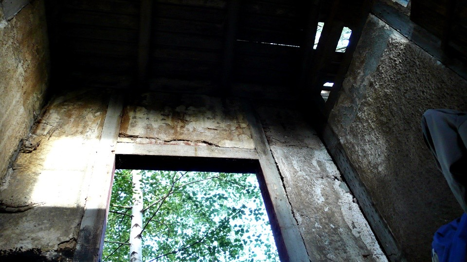
醒來之後發現自己是睡在空屋，並不是睡在漆黑的旅館，也沒有奇怪的人影盯著我看。
這個時候天空已經亮了，好消息是並沒有下雨，天氣看來還不錯，除了很冷之外。
才一大早而已，氣溫只有八度，這樣的天氣讓我很難爬出溫暖的睡袋，身上穿的衣服已經變成睡衣加上厚的保暖衣再加上外套。
還好當時有帶兩件厚的衣服，要是天氣再冷一點，那就再多穿一件厚的衣服跟它拼到底。
這棟廢棄的房子裏頭還有廁所，跟這棟房子一樣陷入廢棄的狀態，滿地的落葉和損毀的馬桶，我盡可能的瞄準往馬桶裡尿。
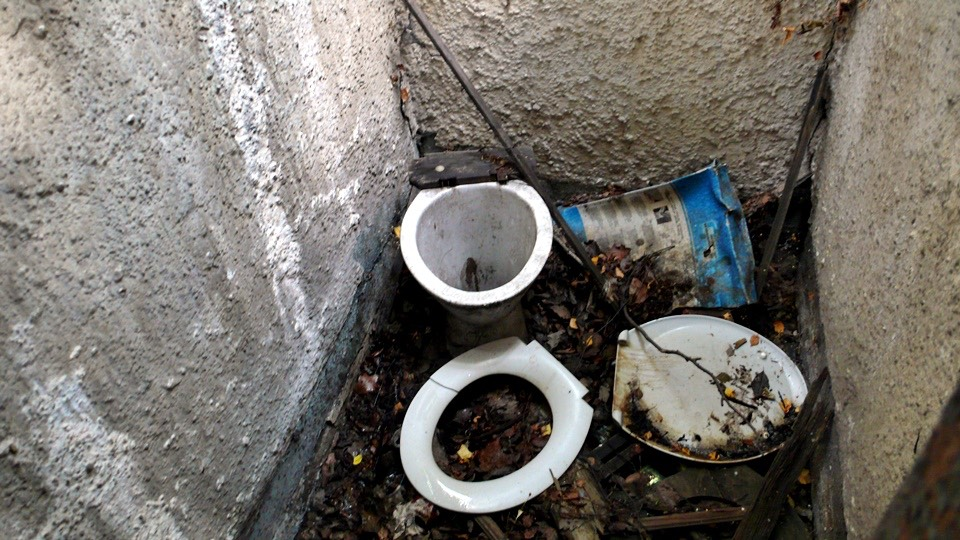
天花板的情況並不是很理想，剝落的情況很嚴重，還好昨天睡覺的那一個小房間還算完整，而落葉也正是透過這裡掉進屋子裡頭。
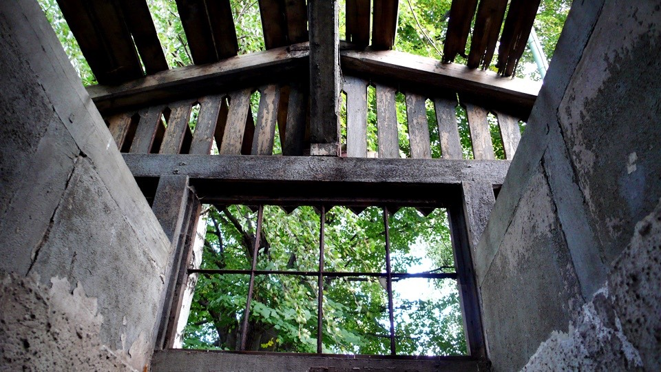
透過沒有玻璃的窗戶可以看見外頭的好天氣，早上稍微睡得晚了一點，起床的時候將近八點了。
外頭的風很強，今天看來不用淋雨騎車，但是要跟逆風奮戰一整天。
昨天抵達這邊已經是晚上，不論往那邊看都是黑壓壓的一片，早上太陽出來之後才看清楚這邊的樣貌，還蠻漂亮的小城鎮。
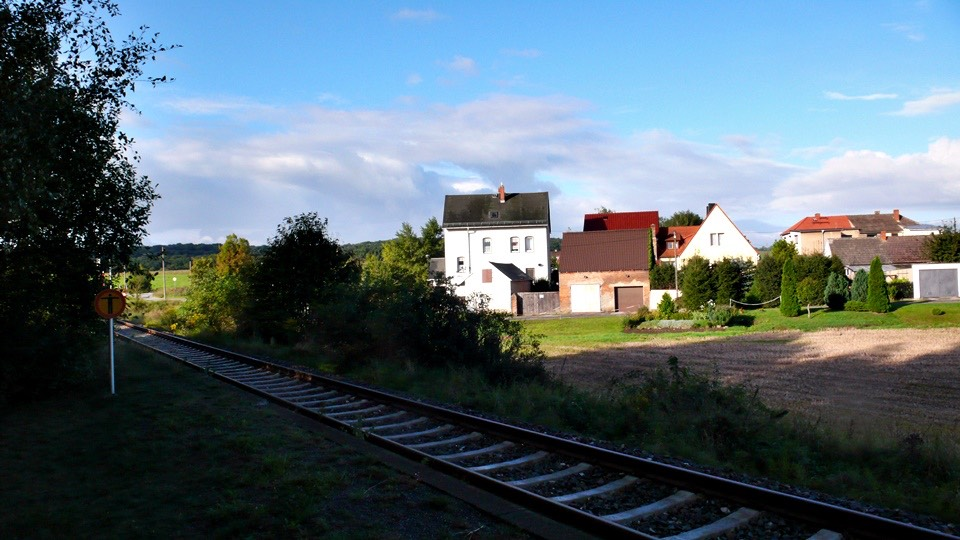
伸個懶腰～一邊收拾行李，一邊啃昨天買的麵包，砂糖全部都加去調味，清點剩下的糧食，還有兩條巧克力，一些糖果跟六粒蘋果。
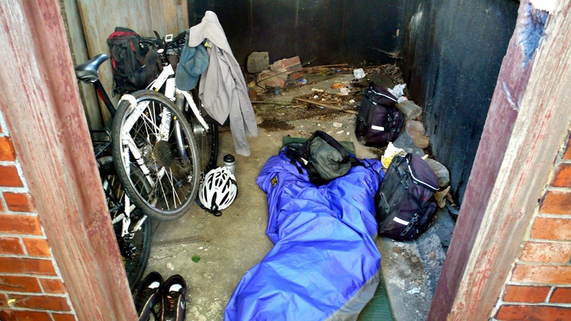
昨天得用閃光燈才能拍清楚睡覺的地方，早上再看一次發現這邊還蠻乾淨的，隱密又平整，要是能夠有一個擋風的門該有多好？
塞進報紙吸水，晚上又吹風了一夜的鞋子已經乾了，只剩下一隻的襪子也同樣的乾了，換上新的襪子準備出發。
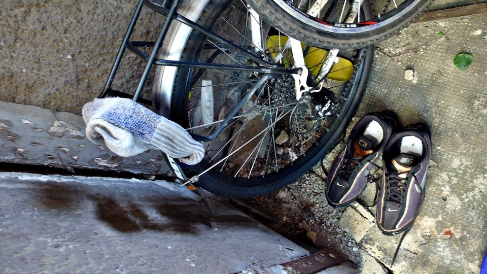
還以為自己睡在很荒涼的地方，結果往前騎三公里之後就發現了很大的購物中心，在外圍的牆壁發現水龍頭，趕緊補充飲水。
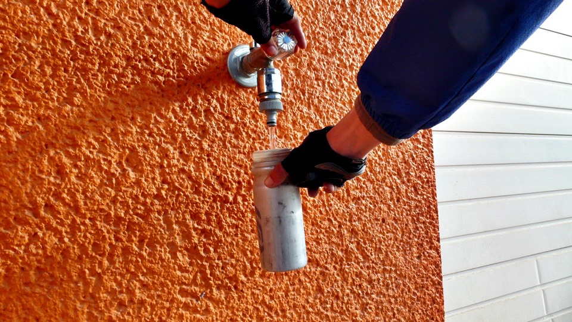
然後沿著牆壁走一圈看有沒有插座的影子，不進餐廳的話就要找其它地方充電寫遊記，騎車時眼光搜尋的東西除了水龍頭就是插座。
往往發現插座的時候都沒辦法供電，今天很幸運的找到有電力的戶外插座，蹲坐在停自行車的架子上，吹著寒風記錄下旅行的點滴。
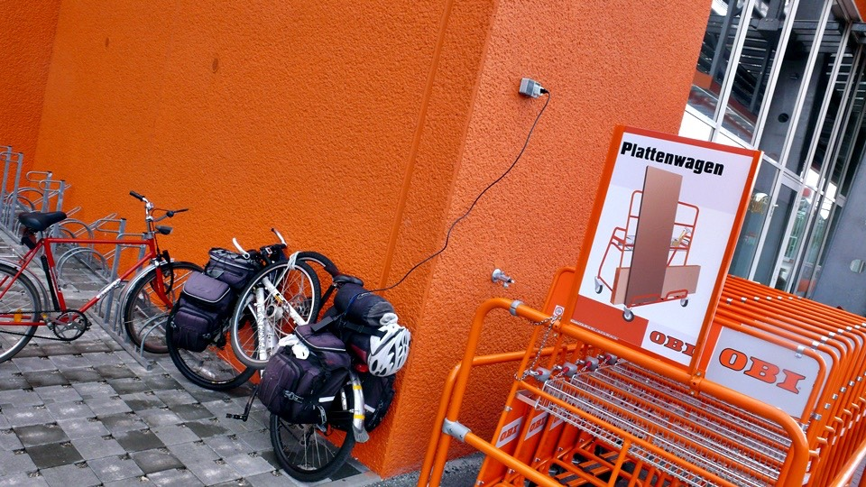
趁自己還記得發生過的事情以及當時的感受，快速的將它整理成文字，再怎麼趕也花了三個小時，等寫完的時候都中午了。
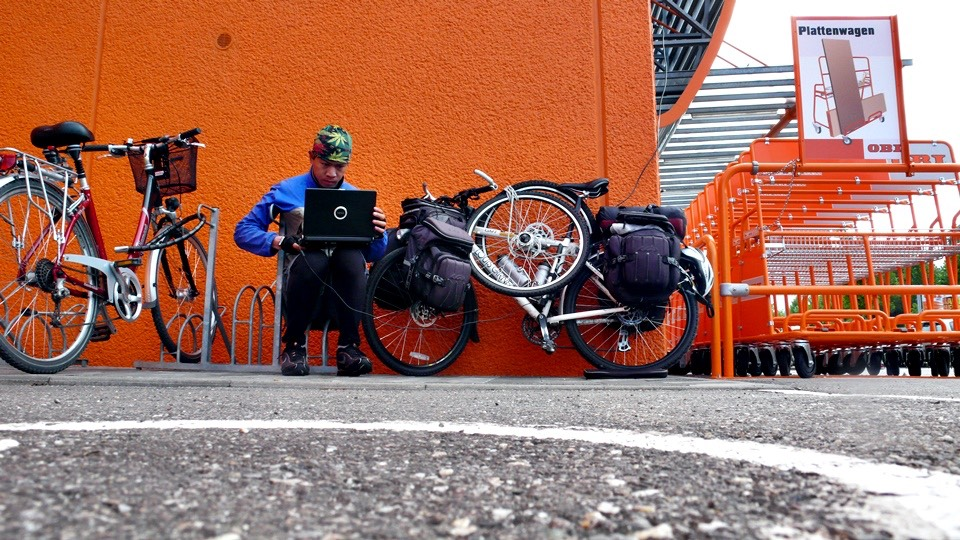
停自行車的架子很難坐，之後拿了睡墊來墊在屁股下面才感覺舒適一些。
氣溫很低的緣故，一些電器用品，比如說GPS記錄器或是iPod的電力消耗都很快，尤其是GPS很讓我頭痛，一旦沒電的話軌跡就會中斷。
所以只要能充電的時候，絕對把握每一秒鐘讓GPS多少補充一些電力。
寫完遊記之後將電腦帶著走，走進賣場中想找無線網路的訊號，網路沒有找到，一進門倒是發現了麵包店。
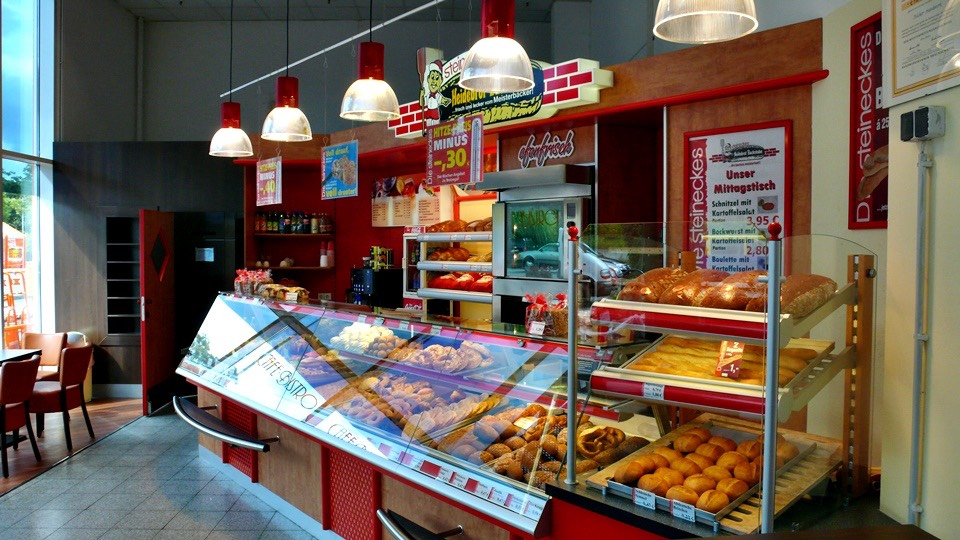
對於飢腸轆轆的我來說，麵包店的殺傷力實在太強了。
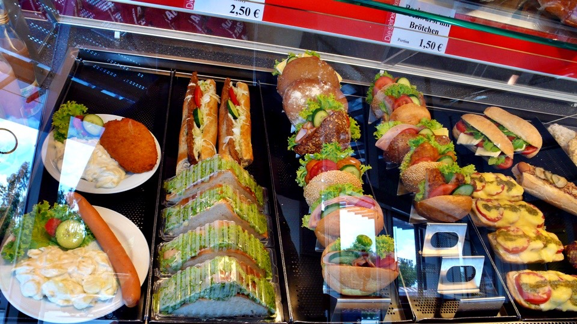
尤其是這些美味的三明治，夾著生菜沙拉跟豬排，光是用看的我就快要昏厥了。
定價稍微超過預算，而且買了也只能吃一餐，接下來又要餓肚子，這樣很心酸，所以用更便宜的價錢買了一塊超級大的黑麥麵包。
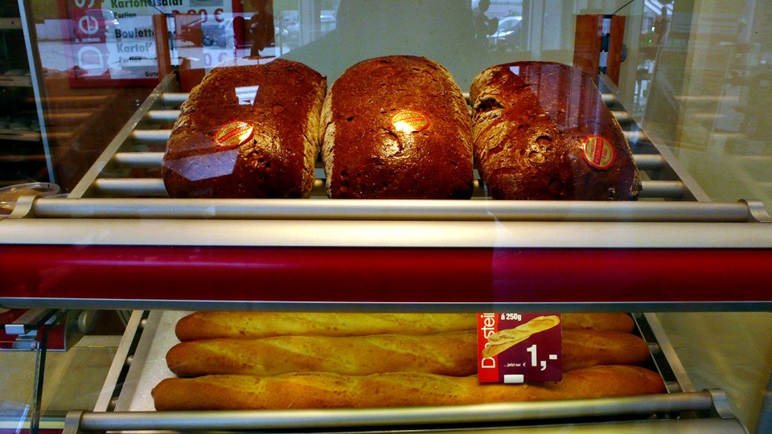
就是最上面的那個，帶有微酸的口感，製作得很厚實，好像在啃石頭一樣，這一塊大麵包吃上兩天應該沒問題，售價是2.31歐元。
買到了麵包，但是沒找到網路，時間超過中午了，碼表的里程數只有三公里，整個很蹉跎光陰，趕緊出發吧～
今天大致上來說是陽光普照的日子，氣溫也隨之慢慢的爬升，最高溫大概到二十度左右，能夠慵懶的曬太陽實在很舒服。
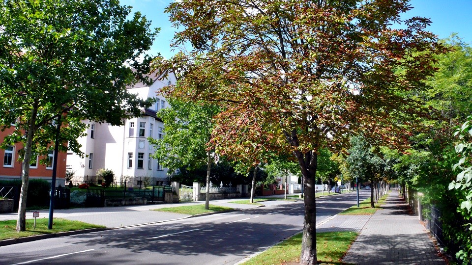
樹葉都漸漸轉黃了，秋天就這麼冷，冬天那零下五十度的氣溫，真不是我這個台灣人可以想像的酷寒。
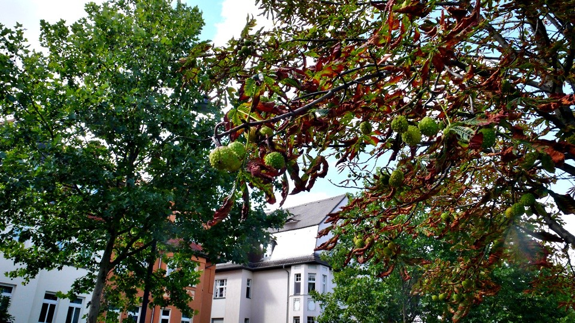
樹上長了好多栗子，手伸長一點就可以拔到，但是這些又不能直接拿來吃。
在這個種了很多栗子樹的小鎮找到了無線網路的訊號，站在街頭上網，電力耗盡的同時遊記也上傳完畢。
三十分鐘之後進入一個叫BAD KOSEN的小鎮，這裡似乎是個觀光景點，因為有旅遊服務中心。
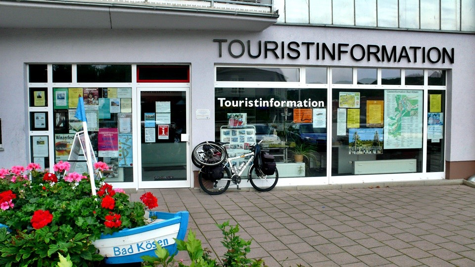
德國很多地名都是用BAD開頭，它是SPA的意思，表示這個區域的泉水或是森林很漂亮，空氣很新鮮，BAD開頭的城市都很適合旅遊休閒。
旅遊服務中心只要有開門的話，總能幫上一點忙，停好小多進去裡面，問問看有沒有德國的地圖可以拿？
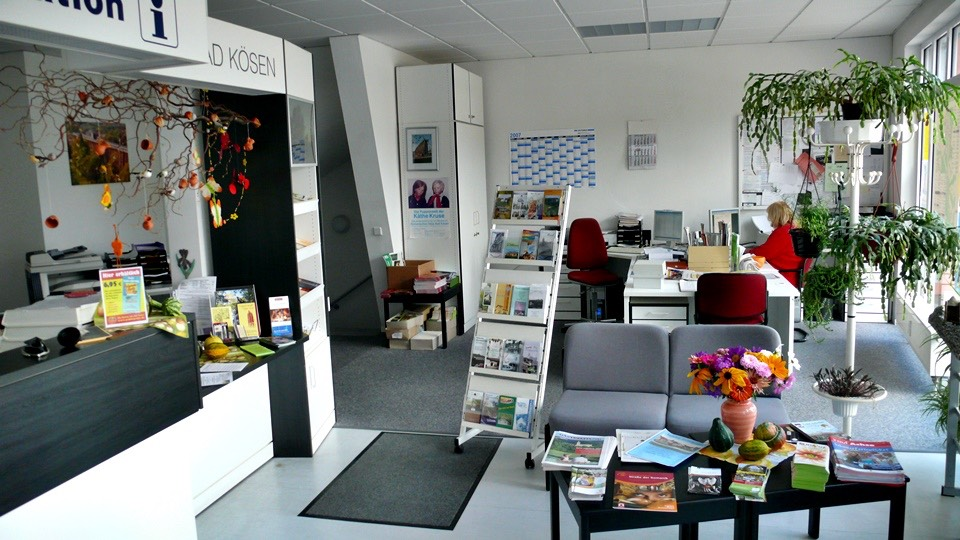
想也知道哪有這麼好的事情，要是有德國地圖可以拿的話，那誰還要去加油站買地圖？
這邊只有這一個區域的地圖，幫助不大，地圖看起來雖然很大一張，但是最遠標示的城鎮也才十公里之外而已。
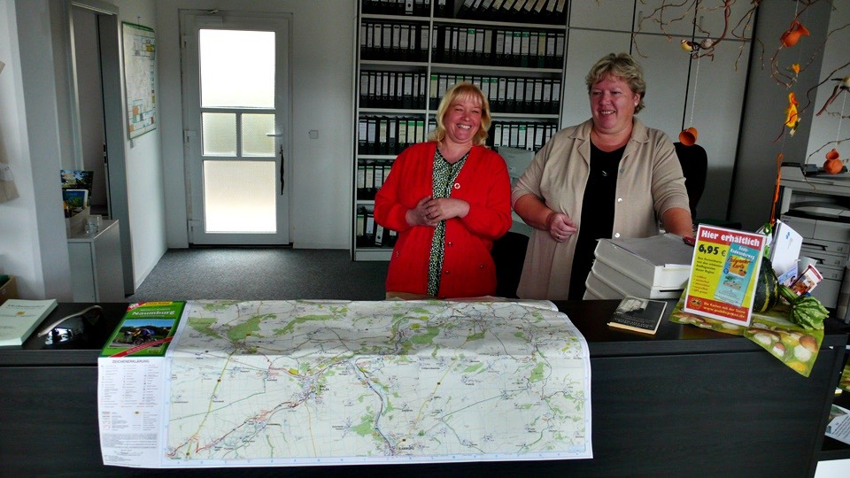
服務處有兩個媽媽在值班，灰色衣服那一位會說英文，她說雖然沒有德國地圖可以給我，但是這邊有一本德國地圖可以借我看。
說完就拿了一本跟字典一樣厚的歐洲地圖，其中又以德國的部分最為詳盡，雖然不能讓我帶著走，但已經是天大的禮物。
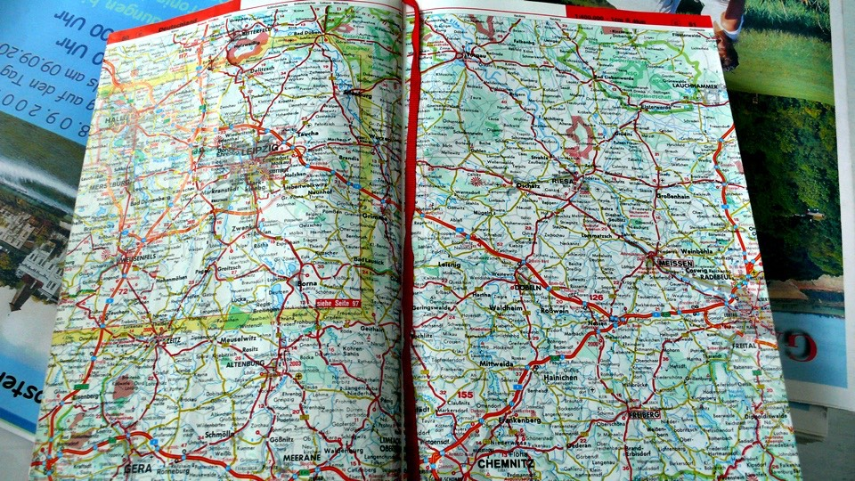
看著德國錯綜複雜的道路，沒有攜帶地圖的我，居然奢望用筆記本中的幾個地名就穿越這個國家，實在太異想天開了一點。
這份地圖非常的詳盡，只要是道路不論大條小條通通有標示出來，在這邊研究了一個小時，重新記錄一次筆記本中的資料。
並且一邊拍照做為救命的緊急地圖，之後只要相機有電的話，就可以將這些照片調出來看，利用放大的功能找路，穿越德國已經比較有概念了。
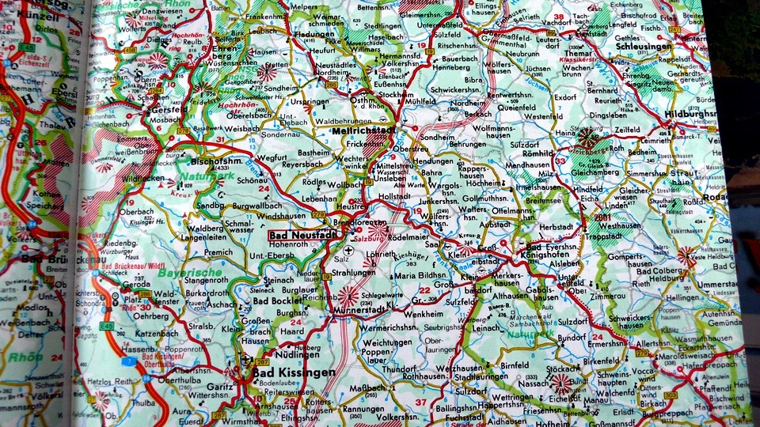
只是這一路往西南方走，都是山路或是田野，起伏的地形很多，最後這一段往終點的路一點也不輕鬆。
因為上網而電力耗盡的電腦想趁機在這邊充電，但卻沒有辦法，要找一個可以充電的地方實在要天時、地利、人和都搭配才行。
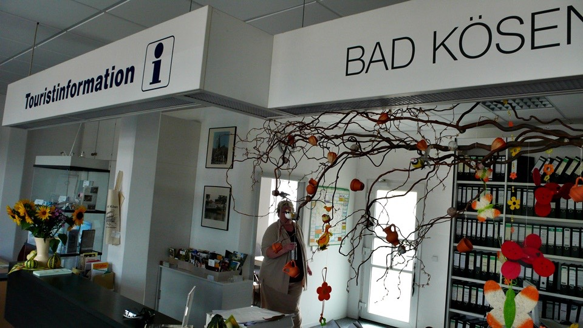
拿著水壺問媽媽說能不能讓我裝點水？
媽媽點頭答應之後，才扭開水壺的蓋子一口氣喝光裡面的水，然後才將空的水壺交給媽媽。
若是不能在這邊裝水，就不能這麼豪邁的喝，水要很省的一路上慢慢喝。
媽媽問我要裝水就好嗎？還是要裝熱茶？
說完就拿出三種茶葉讓我選，其實喝什麼都好，自來水、開水、茶水，口渴的時候不會計較那麼多。
接過媽媽手中裝著熱茶的水壺，道謝後上路騎車，熱茶就放在水壺架上，等拿出來喝的時候已經變成冰茶，水壺也因為受熱加上低溫而變形。
離開旅遊服務處是下午兩點，這時候碼表的里程數顯示不到十公里，今天整個很蹉跎。
不到八點天就會黑的季節，加上逆風跟低溫，今天能騎多遠自己也沒把握。
慶幸的是這些時間並沒有白白浪費，接下來要走的路已經規劃得很有條理，只要去完成它就行了。
這個小鎮景色的確很漂亮，難怪有成為旅遊景點的本錢，一般人沒事也不會到這邊來觀光，欣賞一下照片吧。
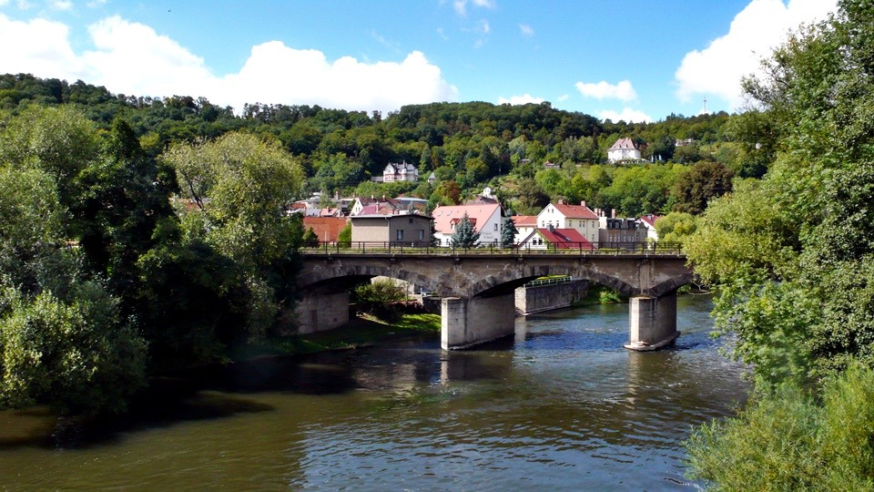
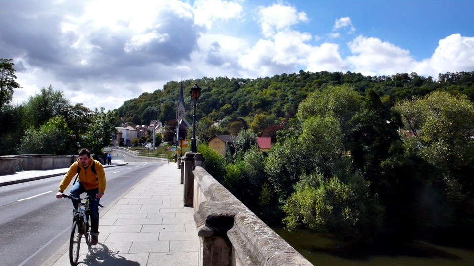
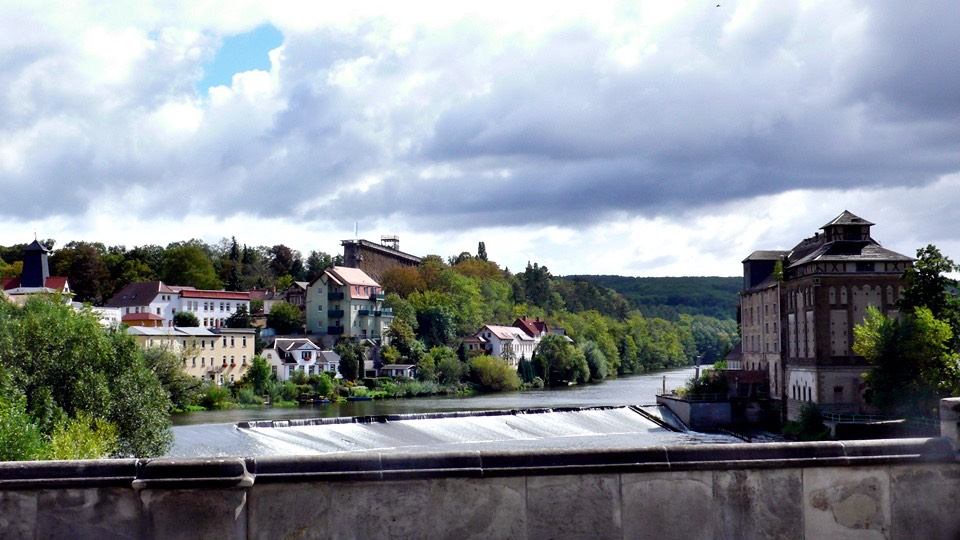
藍天白雲的天氣並沒有持續很久，下午之後很快的又轉為陰天，隨時都會下雨的感覺，這麼低的溫度如果還要淋雨那真是可憐。
小多的座椅是我專屬的椅子，這趟旅行也是我的冒險，屬於你們自己的冒險跟座椅在什麼地方呢？
看著我騎了這麼多的路，多少會有一點屁股很癢，也想要去旅行的心情吧。
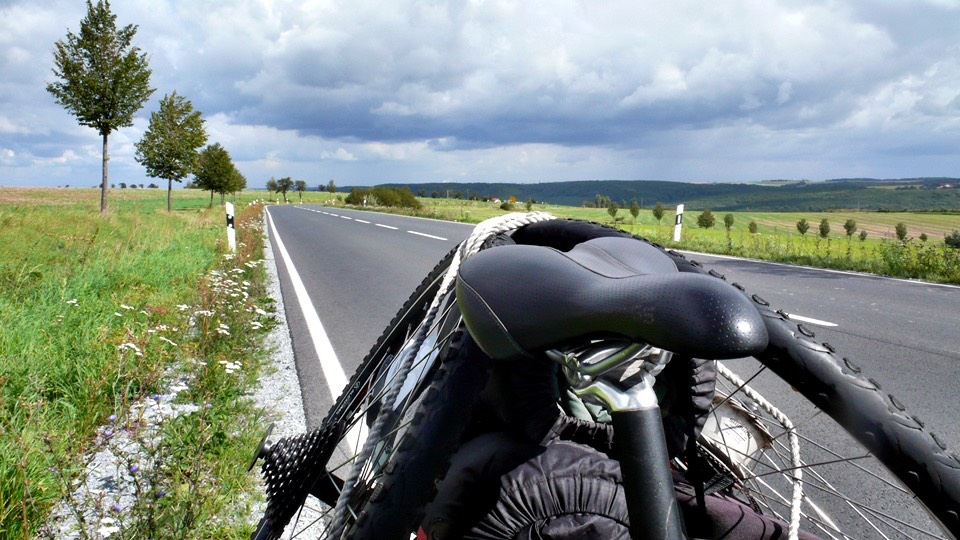
坐上屬於自己、一張獨一無二的座椅，去尋找並且展開一趟自己的旅行～
路邊又開始種起了果樹，這次我看懂它是種什麼了，紅咚咚的蘋果，剛好自己買了蘋果已經全部吃光光。
既然是種在路邊，地上又都是掉落滿地的蘋果，在這邊隨意摘採應該沒關係吧？
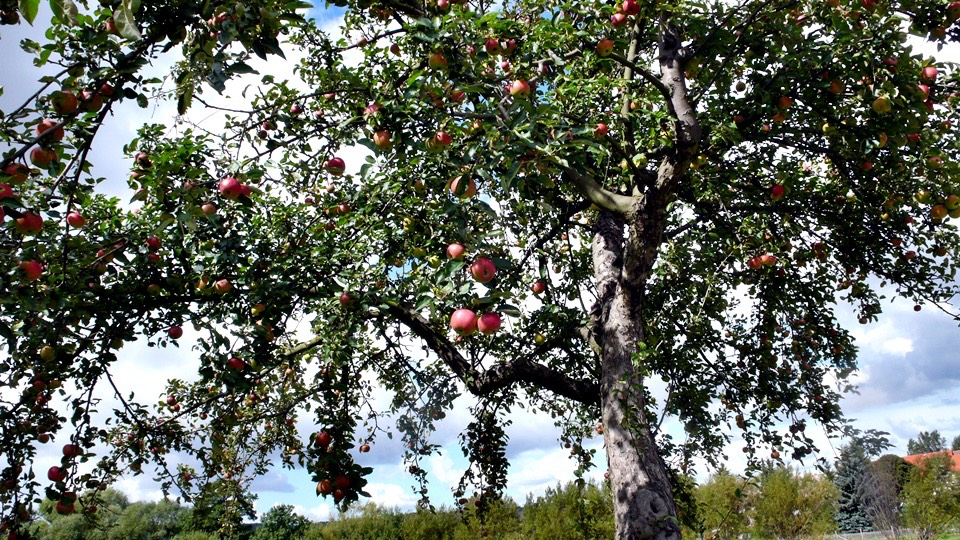
挑了一些外觀已經變紅的蘋果，咬了一大口發現還蠻好吃的，雖然沒有水果攤賣的那麼香甜，味道偏酸。
但既然是上天賜予的免費糧食，怎能還多加挑剔些什麼。

來來回回的摘了幾顆蘋果，裝回已經空空如也的黑色塑膠袋中，這樣又能一路上啃蘋果當點心。
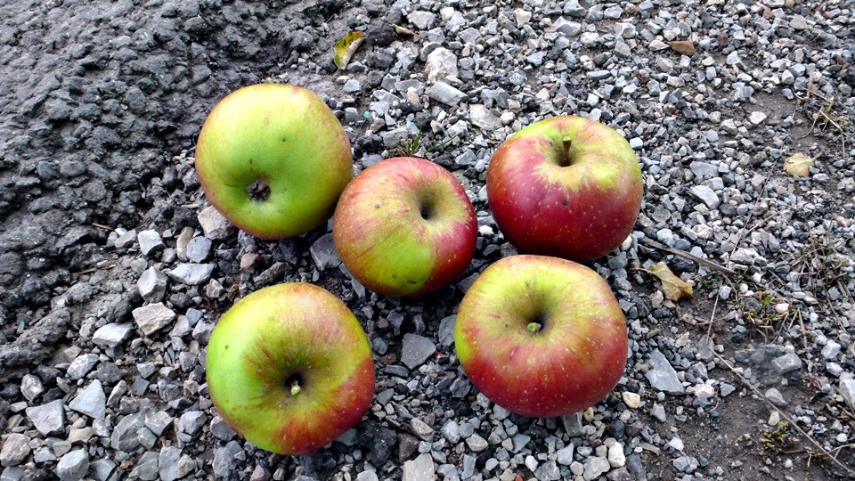
爬滿藤蔓的小屋，這得花屋主多少的心力才能長得這麼漂亮？
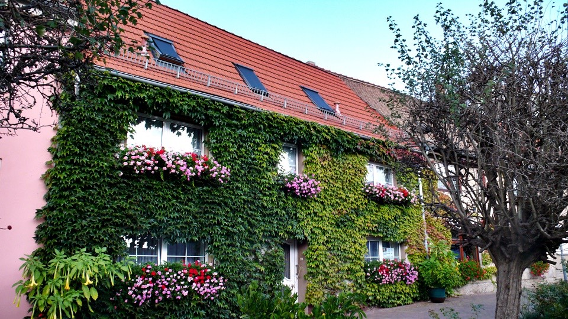
一路上蜿蜒起伏的道路，因為風勢和我想去的地方是反方向，所以騎車很辛苦，下坡的時候都滑不動，上坡則氣喘吁吁。
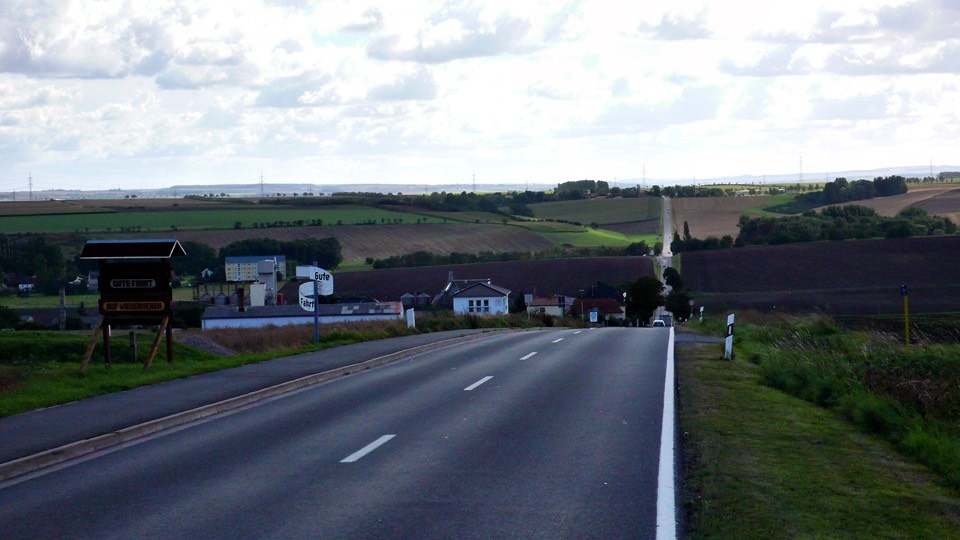
多虧氣溫很低，不怎麼會流汗，手腳倒是很容易就覺得冰冷。
越是想快一點抵達終點，結束這段冷冰冰的旅程，好像越不容易騎得快，只能放鬆心情的騎多少算多少。
非常老梗的道路凹凸鏡自拍，但從我環島第一天拍過這樣的照片之後，就再也沒這麼拍過照了。

若是能夠每天都保持藍天白雲的天氣，騎車就不會覺得辛苦，逆風也沒辦法，只能怪自己來的季節不對。
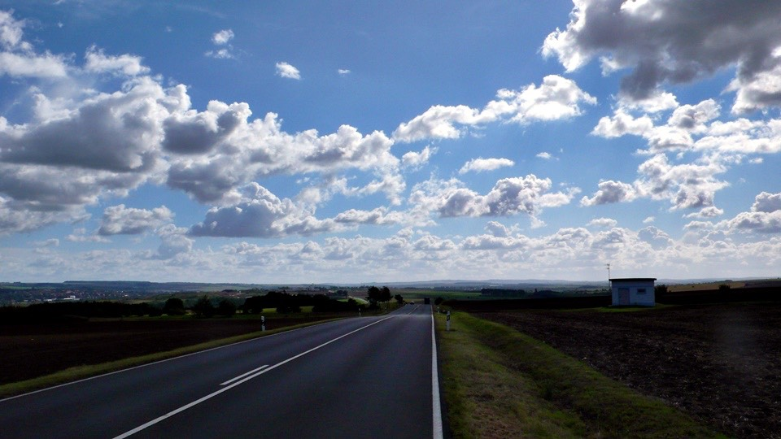
下午五點多發現加油站，每次經過加油站的時候，我都會騎車繞進去轉一圈，看能不能找到廁所或是插座。
這次運氣很好，同時都發現了這兩樣東西，在這裡好好的洗把臉，補充飲水，天氣實在太冷了，擦澡的動作就省略。
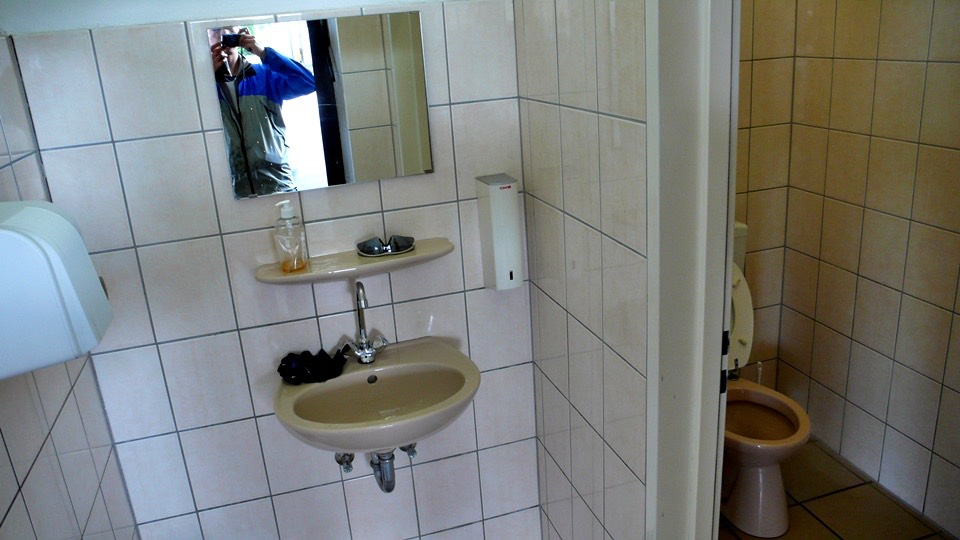
廁所中有插座，插上電後牽到外面來，把握每一次可以補充電力的機會，盡可能的讓電器用品保持有電可用的情況。
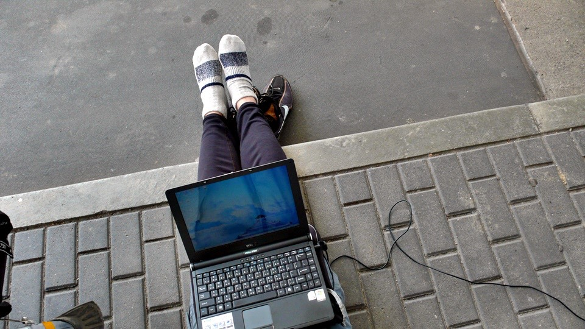
腳丫子很麻煩，穿襪子又穿鞋子很不透氣，可是一脫掉鞋子就變得冷冰冰的，我還這麼年輕就有手腳冰冷的症頭=..=
肚子餓就拿中午在大賣場買的黑麥麵包出來啃，這麼大一條算起來實在很便宜，今天就啃了大半條，剩下的交給明天繼續啃。
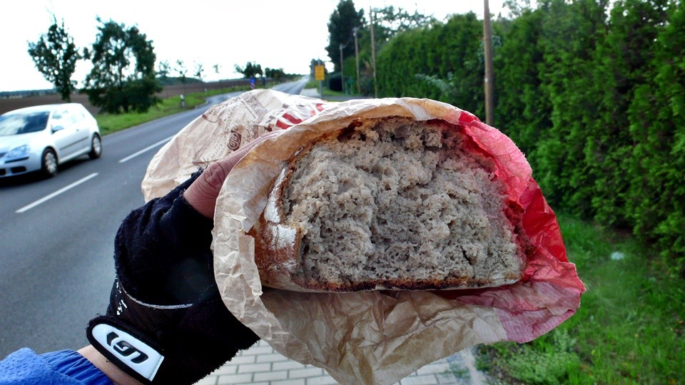
還好吃麵包也算是正餐，現在吃飯的時間很不固定，只要覺得肚子餓了就拿出來啃兩口，想換口味的話就拿自己摘的蘋果出來吃。
這是什麼，注意飛機？
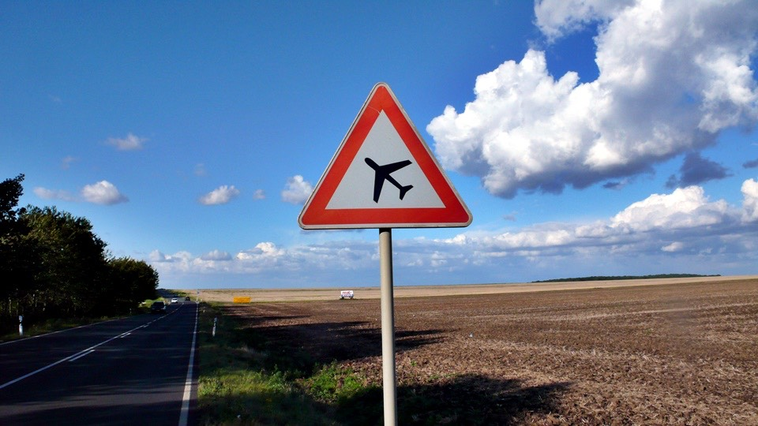
開車的人會去撞到飛機嗎@@"
這個也很有意思，注意下雪，放在這邊的感覺好像是一年三百六十五天，這一段路都有下雪的可能，請多注意。
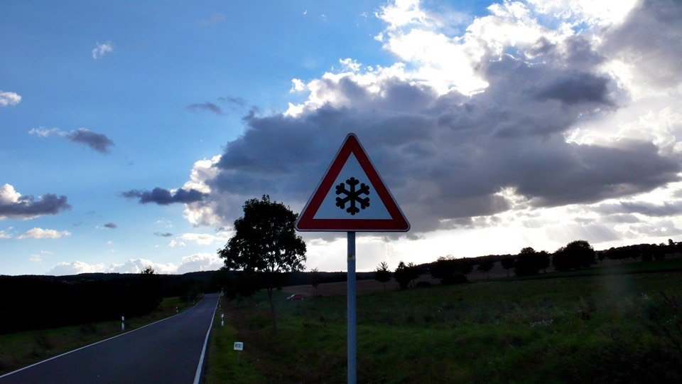
牌子後面烏雲又開始聚集了，笑完之後皮就要繃緊一點，看起來又要下雨的樣子。
進入鄉鎮的時候多少都會有一些地圖，不見得每一個畫的都很好懂，但是盡量學著去看，這一幅貓頭鷹地圖也是有參考價值的。
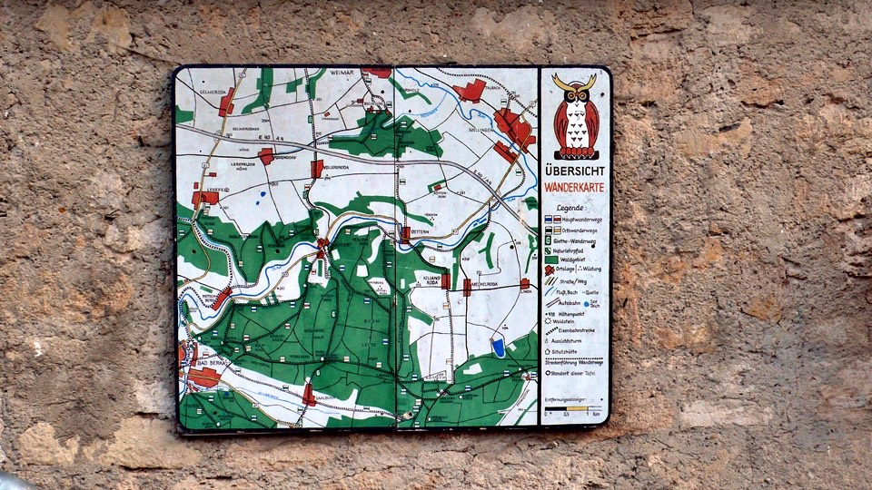
看了地圖之後我才決定要走這個小木橋，玩賽車遊戲的時候常常會開車經過這樣的場景，騎自行車經過則是第一次。
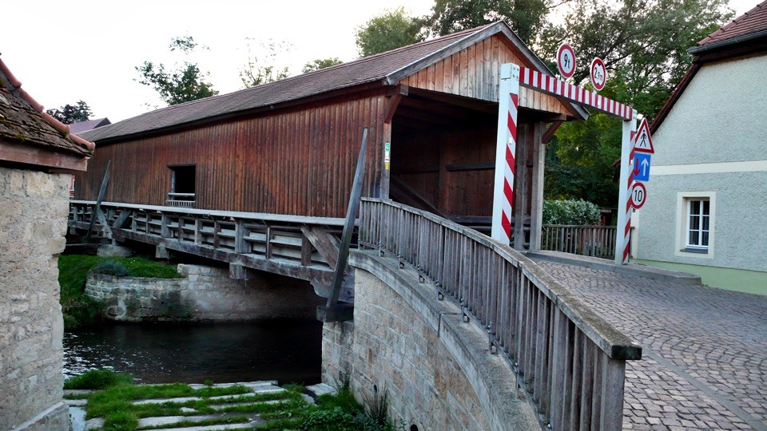
其實現在也是處於小迷路的狀態，感覺有點像在往目標走，但同時又很繞路，與其想那麼多讓自己覺得困擾，不如隨興一點往前騎就對了。
山路，這一段感覺很像蘇花公路但是沒有砂石車，像的原因在於它的爬坡都很陡。
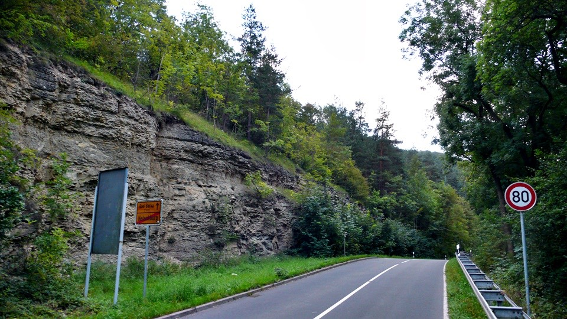
山路騎著騎著就下起了大雨，沒地方躲避所以瞬間就被淋濕。
這場雨和之前淋的不太一樣，打在身上的不只是雨滴，連帶的還有米粒般大小的冰雹。
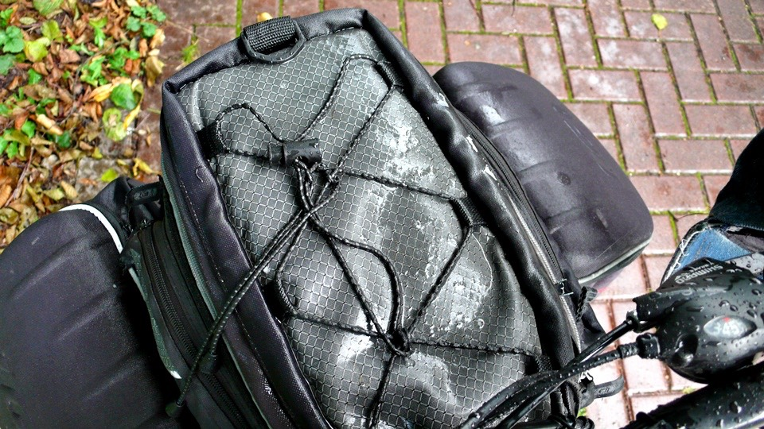
大概是因為冰雹很小顆，所以打到不會痛，落在身上和小多包包上的冰雹很快的就被雨水融化，本來今天都沒下雨，就差這麼一刻還是變成落湯雞。
因為下冰雹雨的緣故，氣溫瞬間降了足足有十度，從本來的十八度變成八度不到。
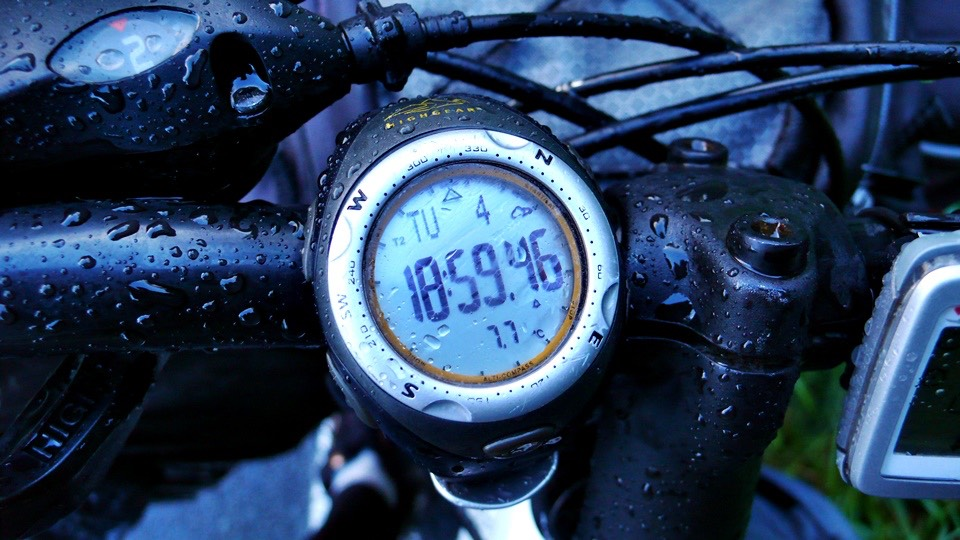
這個溫度已經跟一般人家裡的冰箱差不多了吧？
實際上感受到的溫度則是更冷，抖一抖身上的小冰雹和雨水，鼻水又開始流了出來，又想著自己到底是比較怕冷還是比較怕熱。
答案跟早上一樣，都怕。
下過雨後雲層飄動的速度很快，就像空中的河流一樣流動著，雲層的間隙處難得的露出一點陽光，濕透的馬路映照出金黃色的線條。
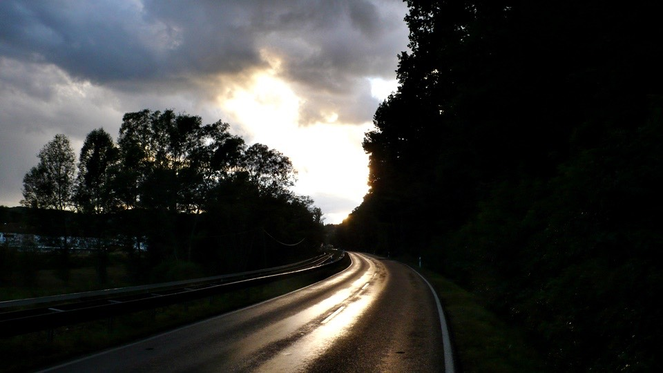
我是一個沒有宗教信仰的人，叫我拿香拜拜也OK，其實我還經歷過很正式的受洗儀式，但依然是無神論者。
在大自然的洗禮之下，人心會變得謙卑，如果神真的存在，不論以任何的形式都好，請你指引我走在正直的路上。
當我迷失徬徨的時候，指引我正確的方向。
當我面對誘惑的時候，指引我誠實的選擇。
當我孤獨寂寞的時候，指引我勇敢的面對。
當我驕傲自大的時候，指引我謙卑的態度。
這趟旅行，發生過很多的事情，但我從來就沒掉過一滴眼淚，學著勇敢的一個人旅行，去處理很多想也想不到會發生的事情。
我需要的不只是勇氣，還有一顆不服輸的心。
越是難走的路，越要走的抬頭挺胸。
我很感謝有一個能夠體諒我的女朋友，讓我出來大半年的時間完成這一趟旅行。
並且在這段時間給予我支持，不論出發前或是即將抵達終點，都和我有著相同的信念，我們不是為了要出名或是賺錢所以才走上這條路。
在大人爾虞我詐的戰爭中，妳依然保有一顆純真的心看待這次的旅行。
記錄下這些點滴，不是為了要讓妳看了心疼，而是要讓妳知道，接下來會陪妳走一輩子的男人，他的程度到什麼地方。
不是一點低溫或是雨水就能擊退，餓肚子算不了什麼，我還有好幾公斤的肥肉可以瘦。
多少人說過，用十萬元要走這一趟是不可能的事情，我走給這些人看，讓他們知道，天下沒有什麼是不可能的事，只是你沒有看見它的可能性。
這一路上省吃儉用，如果旅費有剩下的部分，我就拿去捐給小朋友吃營養午餐。
穿越冰雨之後又進入了一個城鎮，這大概是天黑之前最後一個會經過的城鎮了，又經過了一天，又往終點邁進了一點。
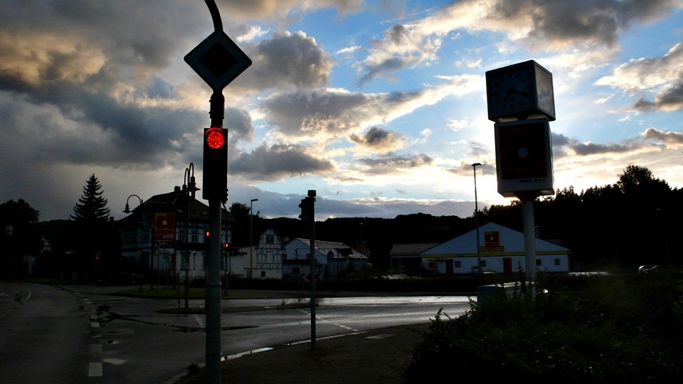
這陣子還是都找有屋頂的地方過夜比較保險，就算不會下雨，起碼也比較擋風，睡在田中央那樣的蠢事還是交給夏天去做。
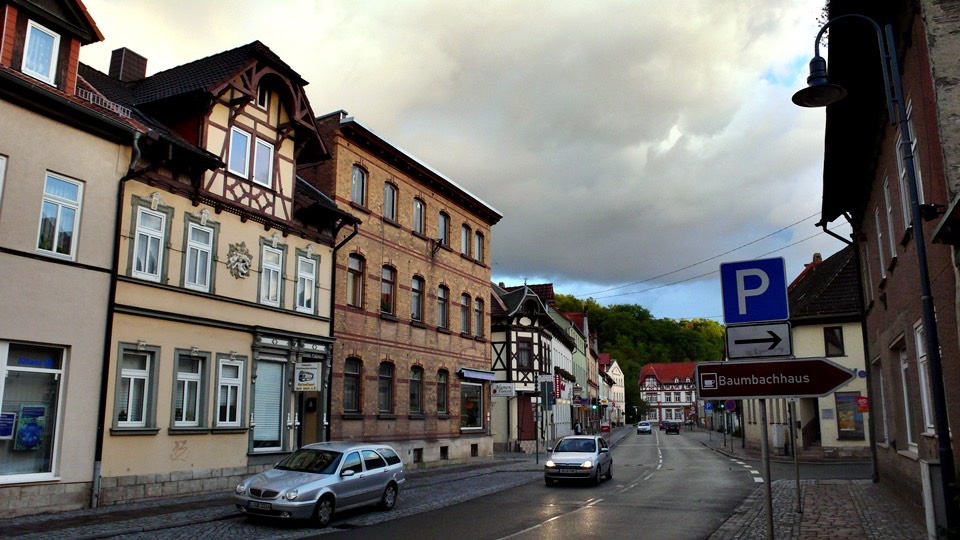
歐洲的景色怎麼看都很漂亮，至多十公里就會出現人煙，騎車倒也沒什麼好擔心的。

如果這麼克難的日子真的過不下去也不要緊，餐廳跟旅館隨時都在待命，還不至於到賭命的地步。
天色要黑了，之前這樣的畫面大概是晚上十一點左右，現在還不到八點就是這樣的畫面。
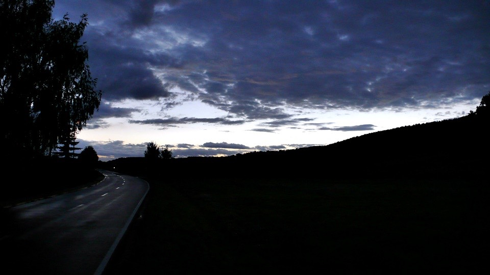
街燈亮起的同時也代表今天的日光時間結束了，繼續再走就變成夜騎，不僅危險，而且晚上的溫度一天比一天還要低。
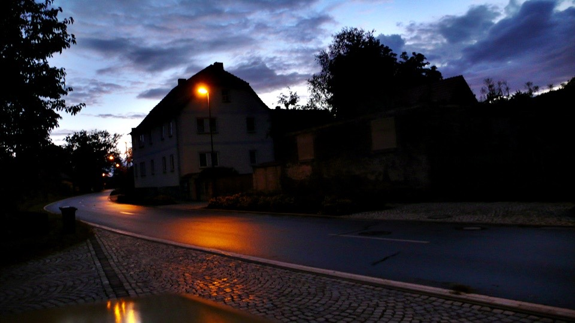
今天睡在這個小鎮的公車站，左右兩邊都是透明的玻璃，還好沒有破掉，大大的木頭椅子很寬，今晚就不用睡在地上了。
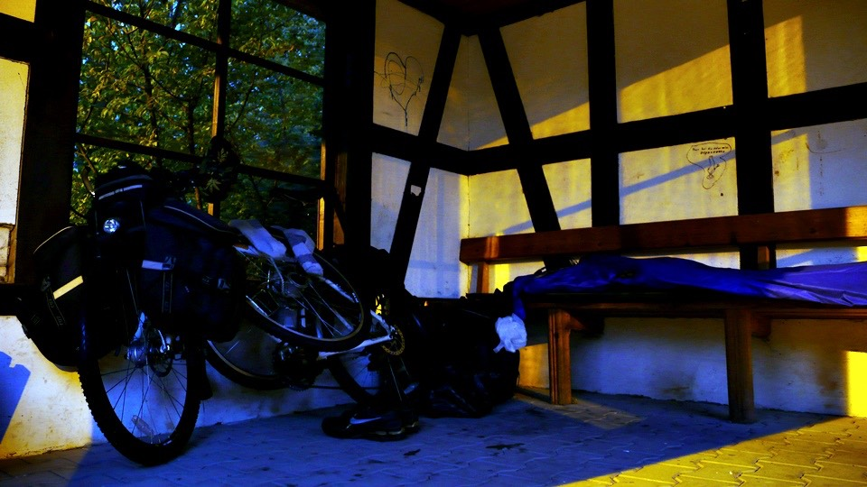
看起來很明亮的公車站，其實已經很昏暗，唯一的照明只有街邊的小燈，照片拍起來這麼亮是因為使用『星光模式』。
就是拿來拍星空的時候開啟的功能，連續曝光十五秒鐘才有這樣的亮度，用閃光燈拍起來的感覺實在太冰冷了。
換上短褲之後就要趕緊鑽進睡袋之中，氣溫又要下探到接近冰點，睡衣則沒什麼好換的，脫下外套，再脫掉一件厚衣服，最裡面那一件就是睡衣。
最冷的時候莫過於冰雹雨降下的那幾分鐘，那都已經過去了，現在窩在睡袋裡很溫暖，暖暖的就進入了甜美的夢鄉。
繼續閱讀：9.5 星期三 猴子去爬山
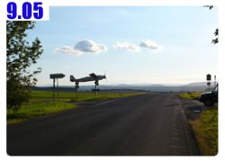
歐洲-歐元－ 1：45 台幣
9.4
總計：2.31元
超大分量黑麥麵包2.31元